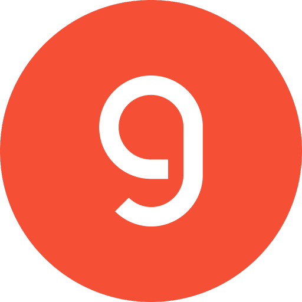

Alive.
Not theatrical.
A trusted private instrument with the warmth of a relationship and the precision of a professional system.
Product character
Viventium should be friendly enough for a child to understand and rigorous enough for a professional to trust. Clarity is the premium treatment.
Presence over spectacle
Current state and activity feel alive through precise feedback, not animated blobs, glowing brains, or fake consciousness theatre.
One human question
Each surface answers only what the person needs now. Is it on? Which account? What can I do? Deeper evidence appears only when it resolves a real question.
Depth is progressive
The default view answers the human question. Evidence, configuration, and implementation detail sit one deliberate level deeper.
One system, four doors
MIND, CONNECT, CHARACTER, and AUTOMATIONS share one language and a few reusable modules. Messaging stays the daily interface.
Color system
Quiet graphite and warm paper carry the product. Satin blue marks focus and presence. Feeling colors belong only to their own spectrum and trace.
Typography
The native system sans makes Viventium feel at home, load instantly, and stay lightweight. Monospace appears only where technical precision is the content.
Interface language
One living ledger makes accounts, sources, feelings, and automations instantly scannable. Services contain separate named accounts; each account stays individually controllable.

GroqActivation detection · requiredConnect to finish setupNeeds you Email2 separate accountsPersonal · ChromeOn
Email2 separate accountsPersonal · ChromeOnFind everything → review accounts → connect selected
GlassHive discovers what is already available. Nothing connects until the person reviews the findings.
Show where a state came from
Feelings and autonomous work keep a readable trail: what changed, when, by how much, and why.
The MIND signature
One conversation and its emotional state appear together. Message origins remain quiet provenance, never a switch between separate versions of Viventium.
Guardrails
These rules prevent the UI from becoming either a childish assistant toy or an intimidating AI operations dashboard.